This tutorial is also available as a Jupyter Notebook here
In this tutorial I explain some of the different ways you can use and manipulate colors in matplotlib.
Part 1: Named colors
You may already know that you can pass a color argument through commonly used plotting functions to set the color of your lines and points. Any common color will do, but there are actually more than a thousand named colors recognized by matplotlib.
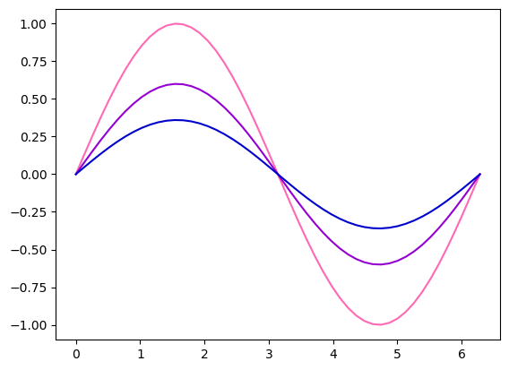There are four main groups of named colors in matplotlib: the default Tableau 10 Palette, 8 single character "base" colors, CSS colors, and all the colors from the xkcd survey (https://xkcd.com/color/rgb/). Their names and RGB tuples or HTML hex codes are available in dictionaries in the colors module:
Colors in the Tableau palette must be prefaced with "tab:"
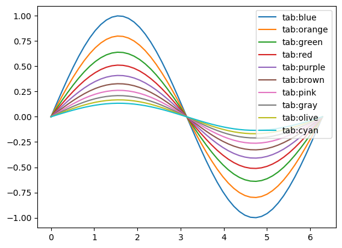Similarly, xkcd colors must be prefaced with "xkcd:"
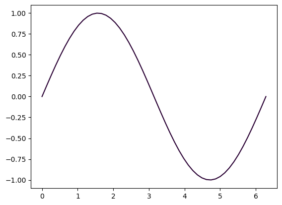All named colors are in ⎯𝚌𝚘𝚕𝚘𝚛𝚜⎯𝚏𝚞𝚕𝚕⎯𝚖𝚊𝚙 . You can check if a color you are thinking of will be recognized by matplotlib by searching in there:
If you would like to peruse, just run this code:
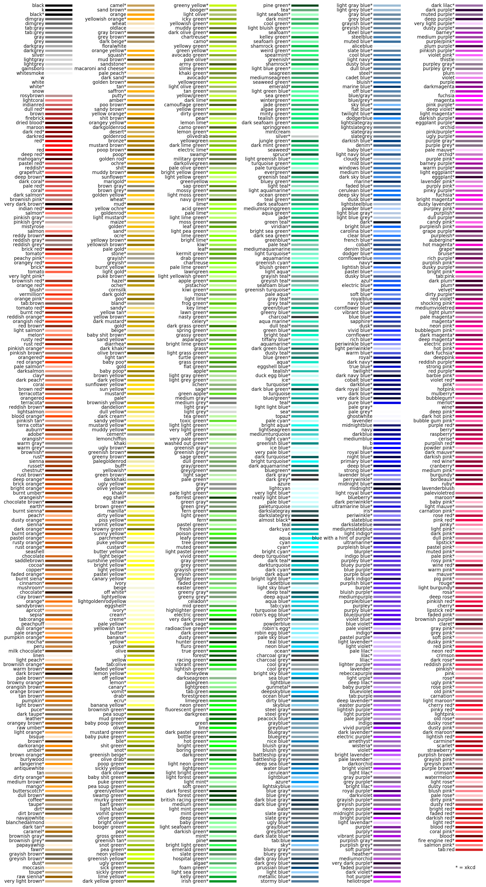You can also pass in RGB tuples and HTML hex codes. The former must be values between 0 and 1 (divide by 255 if you have a RBG tuple not in that interval), and the latter has to be a string.
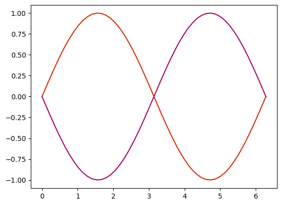If you search "color picker" in Google, the search engine will provide you an interactive tool with color sliders that provides RGB and HTML hex codes, of which there are 16 million different possible values.
To get the RGB tuple or HTML hex code of a color you know the same of, you can use the 𝚝𝚘⎯𝚛𝚐𝚋 and 𝚝𝚘⎯𝚑𝚎𝚡 functions:
You're not limited to just lines and points: you can set the color of every aspect of your plot.
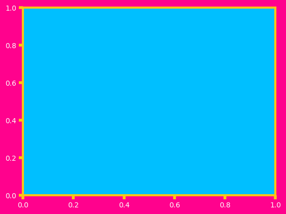If there's a color scheme you like, you can set it to your rcParams to keep the rest of your plots like that for the rest of your script or notebook. Here's a figure style based on my alma mater:
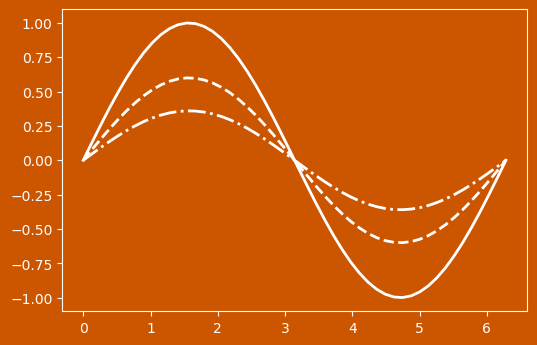Call 𝚖𝚙𝚕.𝚛𝚌𝙿𝚊𝚛𝚊𝚖𝚜.𝚔𝚎𝚢𝚜() to see everything you can change. Use rcParamsDefault to return to default:
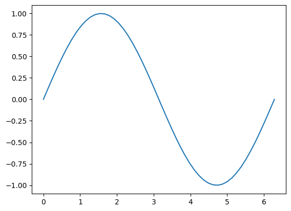Part 2: color cycle
By default, plot colors cycle through the 10 Tableau Palette colors. While you could set the color for each plot manually or in a loop, you can also set the color cycle to whatever you want by setting the property cycle attribute of your axis:
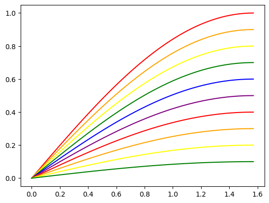You can also add this color cycle to your rcParams to set this for all the plots in your notebook or script so you don't have to do this every time:
You can also use the string "CN", where N is the position in the color cycle, to get that specific color:
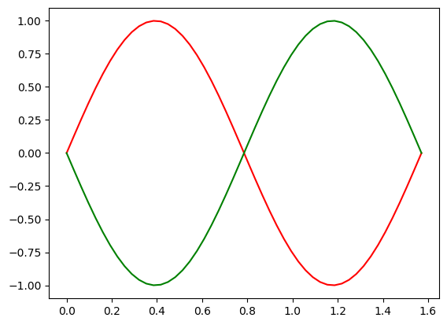matplotlib also has a built-in color cycle that is more accessible for those with color vision deficiency. You can use it by using the tableau-colorblind10 style sheet:
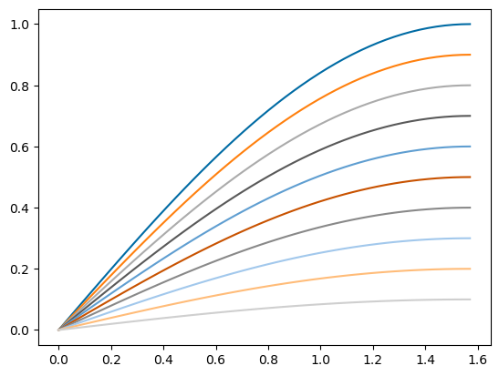There is also seaborn-colorblind:
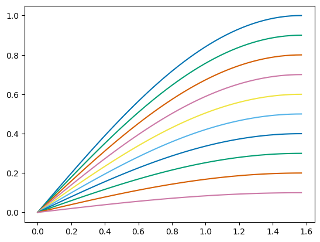You can also set the linestyle property cycle to reduce the ambiguity of color:
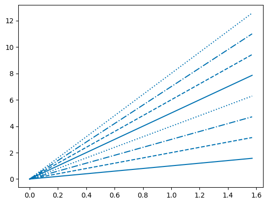Part 3: colormaps
You may also be familiar with setting colormaps, such as when using the imshow function. The default is called "viridis", but there are many built-in colormaps in matplotlib.
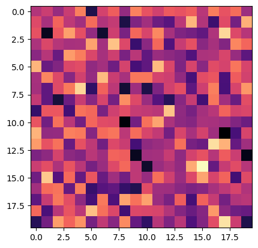plt.colormaps() returns a list of all 164 built-in colormaps. This includes 82 colormaps and their reverse, which you can call by adding '_r' after the name of your desired colormap. You can run the functions below to plot all of them up:
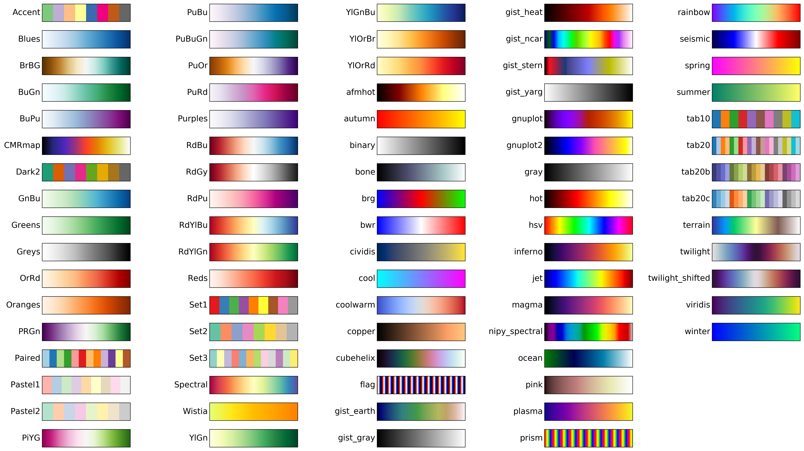There are four main types of colormap: sequential colormaps increase incrementally in brightness or hue. This is useful for representing data in the which the order matters:
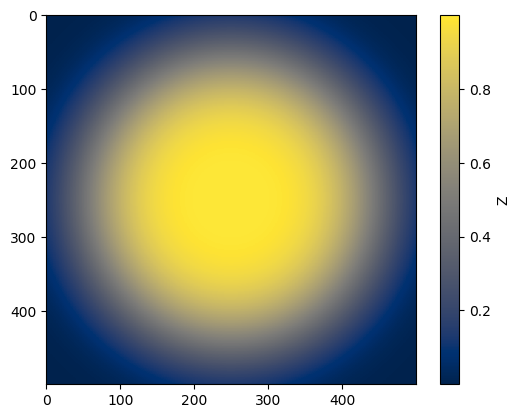The perceptually uniform sequential colormaps (viridis, plasma, inferno, magma, and cividis) are generally the more accessible colormaps for those with color vision deficiency.
Diverging colormaps have two colors that also change in brightess and hue to meet at some neutral color in the middle. These are good to show change from some value of interest.
Cyclic colormaps come back to meet each other at each end, which is good for values that repeat or come back onto themselves.
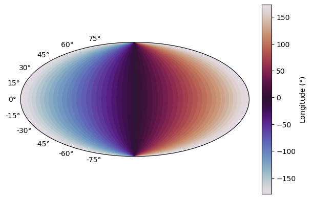Qualitative colormaps don't have specific ordering and so are better suited for data sets in which the order doesn't matter, or you can use them to choose a list of colors (which we'll get to in a later section).
As I've shown above, colormaps don't only have use in imshow: you can use the color to plot a third variable in scatter plots:
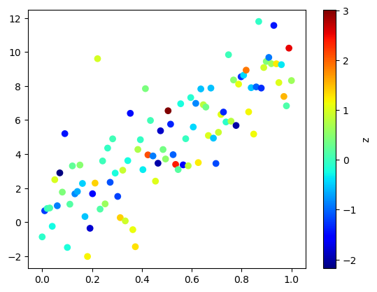We can also use colormaps for some third variable in line plots. Using a line collection will make plotting several related line plots both easy and efficient:
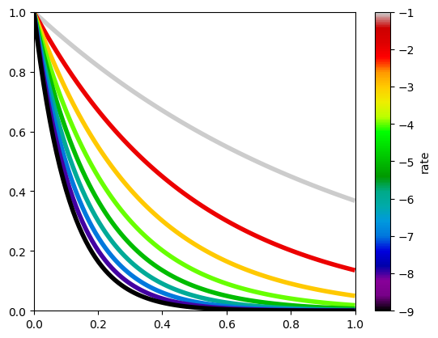If you're plotting a continuous function, you can also add a nice gradient with pyplot.scatter:
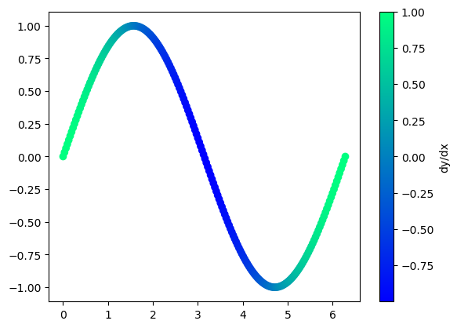However, if you have too few points, your data might not appear as one continuous line. Fortunately, you can also add changing color to line plots by using a line collection:
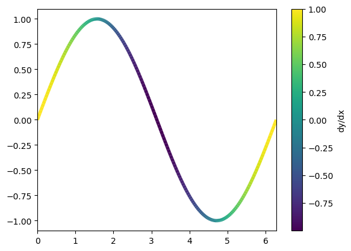If there's a range of values you don't care about, or a range you want to focus on, you can use the vmin and vmax arguments:
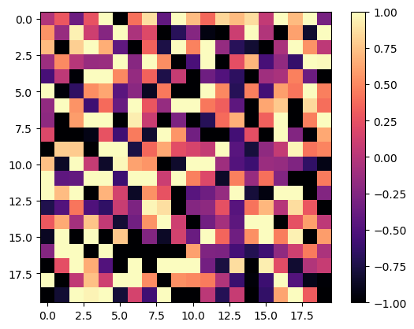Part 4: Colormap normalization
Real life data is complicated! What if our data isn't linearly ordered?
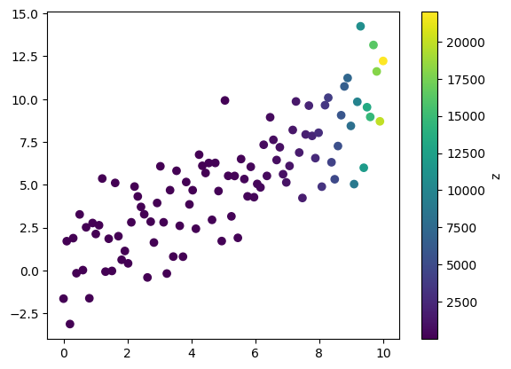We're not learning much from the colors in the above plot. By default, colormaps map colors linearly from the minimum to maximum value. Luckily, we can map the colors in the colormap according to a Normalization class. For the plot above, let's try normalizing it to a logarithmic scale using the LogNorm function in the colors module.
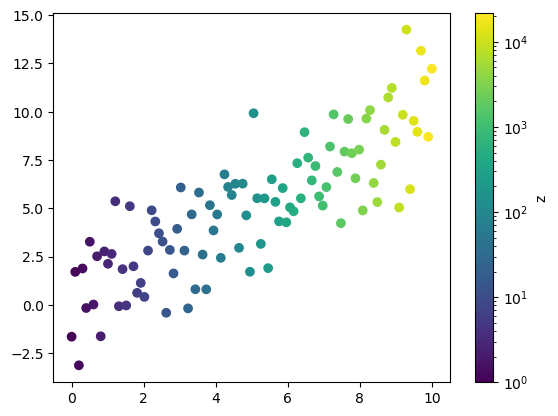Much better! Similarly, you can normalize to a power law relationship with PowerNorm. PowerNorm takes the argument gamma, which is the power the color values will be mapped to.
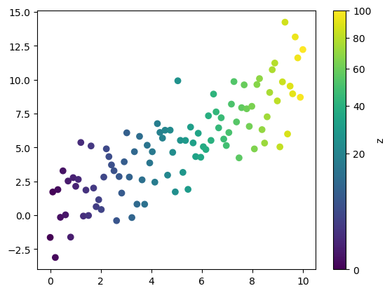Now, let's consider again the example of random data around zero, except this time, presume that the distribution was not perfectly random and there was a skew in one direction. You'll notice, especially if you use a diverging colormap, that zero is not our center color, and in fact pixels with a value of zero will appear light red in the plot below:
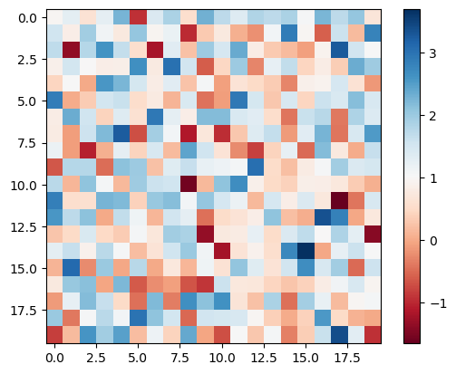This might be misleading, and we might miss important information, such as how our data tends more positive than negative. We can set the center of our colormap using DivergingNorm, which takes the argument vcenter:
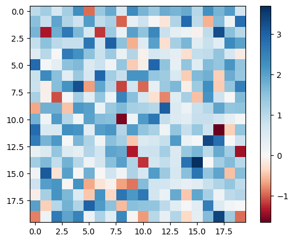There, now it's much more clear that the data leans more positive than negative and that white pixels are zero.
If you want your colors to be discrete, you can use BoundaryNorm. The argument boundaries is the boundary values between colors, and ncolors is the number of discrete colors to choose from in your chosen colormap. By default, the built in colormaps have 256 colors, but this doesn't always have to be the case, as we'll see in the next section.
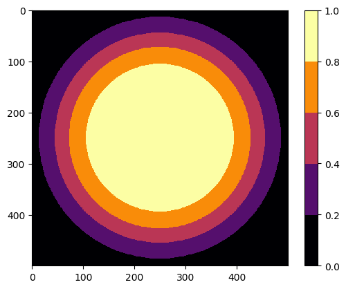Check out the documentation for a few other types of normalizations: https://matplotlib.org/stable/tutorials/colors/colormapnorms.html
Part 5: Creating your own colormaps
Of course, you're not limited to just the built-in colormaps as-is. You can create your own for countless possibilities. Let's start by adjusting the built-in colormaps by getting a colormap instance with plt.get_cmap. If you would like the colors to be more discrete without setting a BoundaryNorm for each dataset, you can give an integer argument for the number of different color values:
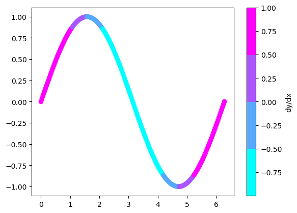Our new colormap is a function that we can pass floats between 0 and 1 through. This returns an array with dimensions (N points x 4). The first three columns are the RGB tuple values for each point, and the fourth is the alpha (opacity/intensity). Let's create an array of colors that covers the full range of one of the built-in colormaps:
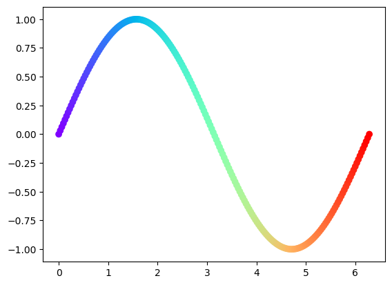We can limit the range of colors as well by not starting and ending at 0 and 1:
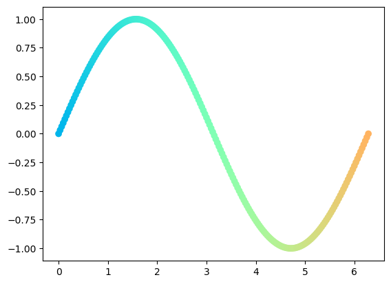The floats you pass through your colormap don't have to be linearly increasing from 0 to 1. You could get the reverse colormap by passing an array of values starting at 1 and going to 0, or you could make your colors cyclic by using a sinusoid. As long as it's normalized to be on [0,1], you can pass any array through the colormap.
We can also change the color array after its creation. Let's change the alphas of our plot to match the derivative:
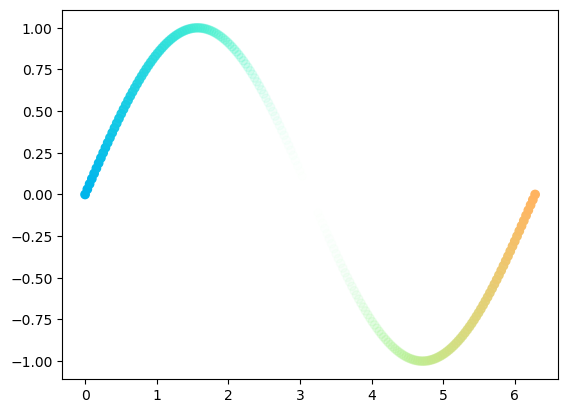Or, let's say I really like all but one color in a built in colormap. We can change that too:
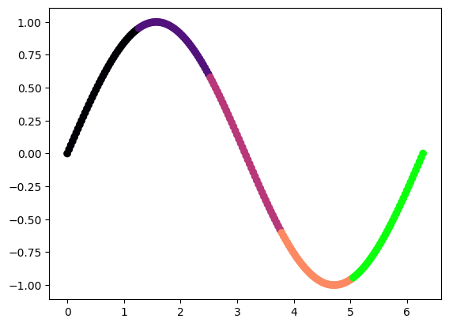You can create a completely new colormap from a list of colors:
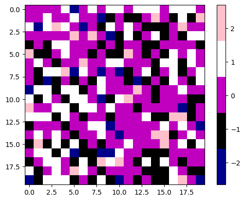If you want a gradient of colors interpolated between this list, you can create a Linear segmented colormap:
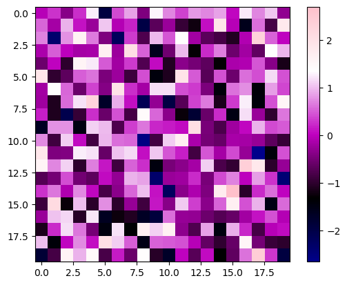You can also use nodes to give greater weight to one color:
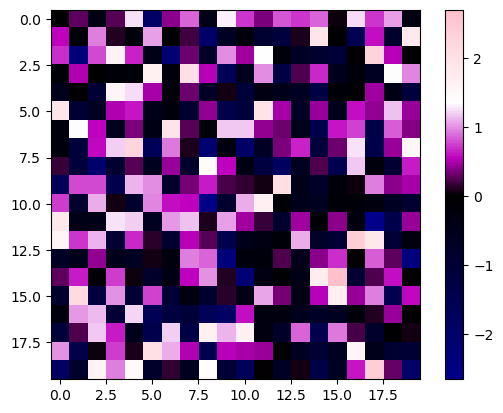Now, it's easy to get carried away when making your own colormap. When using colors to represent an important dimension of your data, it's best to make things as clear as possible, which means the simpler the better. Usually, just two or three colors will get the job done. Consider a gradient between a light and dark color, or a light color between two darker colors if you want to highlight divergence from some baseline value:
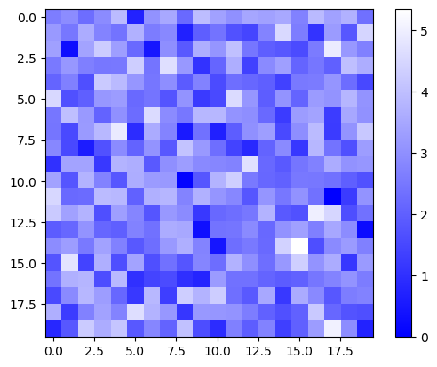 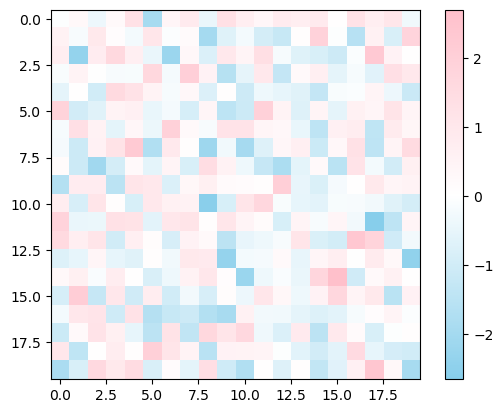If you want more than three or four colors, it's best to remove any that are too similar and then sort the remaining by brightness. Take the colormap I created a couple of cells up. It's a little confusing with both blue and magenta on either side of black. We're seeing similar colors at different points on the scale, making it a little ambiguous.
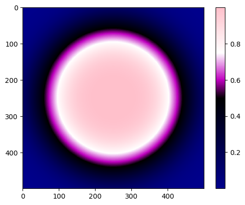What's happening on the edges? Is the value going back up? Our eye is also naturally drawn to brighter colors. Is there something special about that white ring?
Let's sort our colors by their brightness, for which I'll use the "value" in HSV:
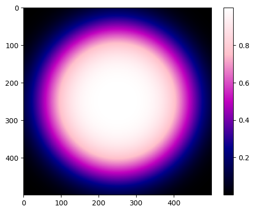Much better. You can clearly see that the maximum is in the center and then decreases from there.
You don't have to use colormaps in ways directly tied to your data. For example, you can add a gradient to your color cycle:
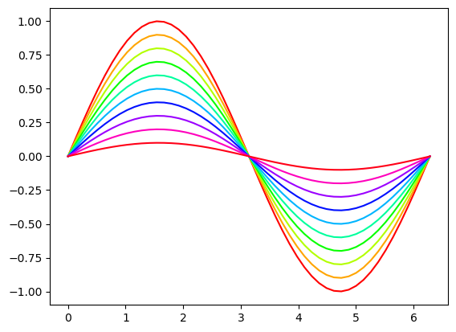Alternatively, you could use one of the perceptually uniform colormaps I mentioned above to make a more accessible color cycle.
You could even add a gradient to your axes:
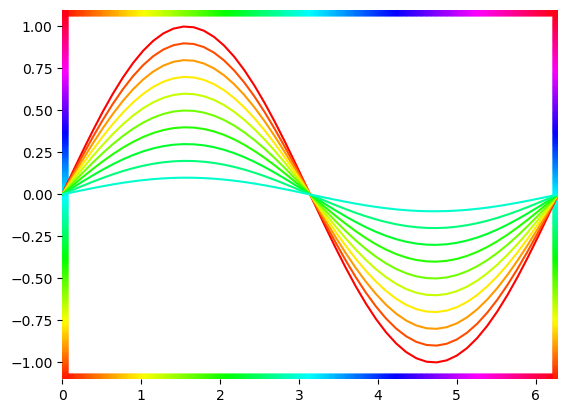Here are some Pride inspired colormaps:
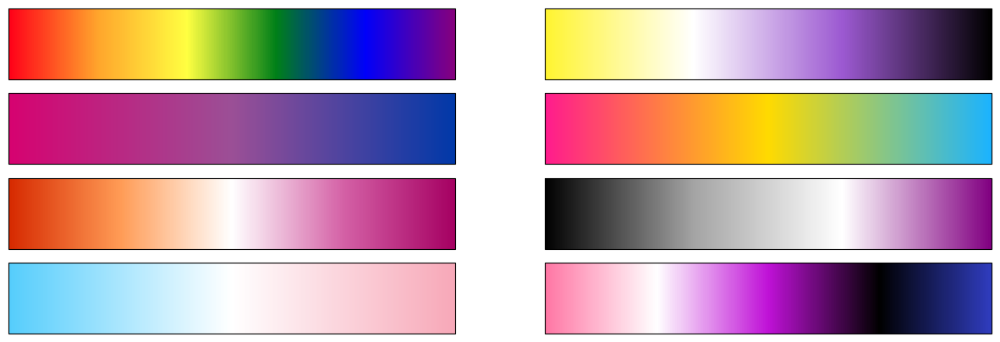 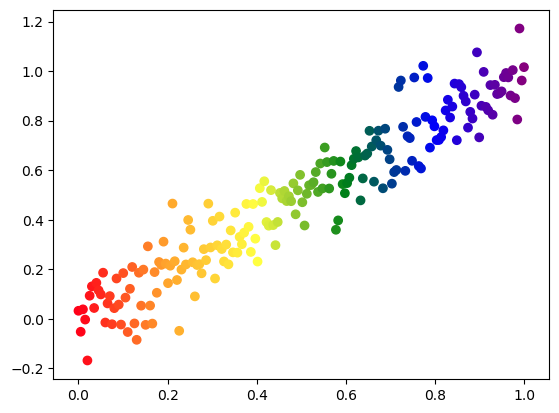 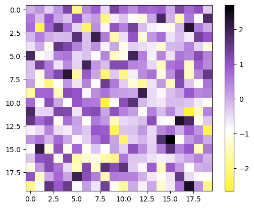 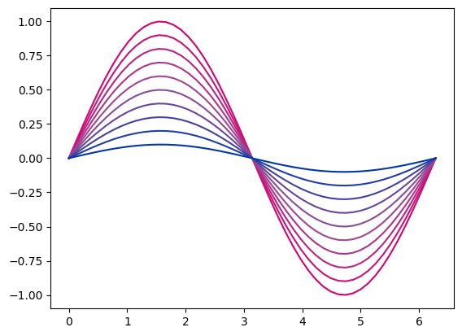That's all for now! If you have any questions or want to show me your colorful plots, reach out on twitter @ExoplanetPete. Happy plotting, and happy Pride!